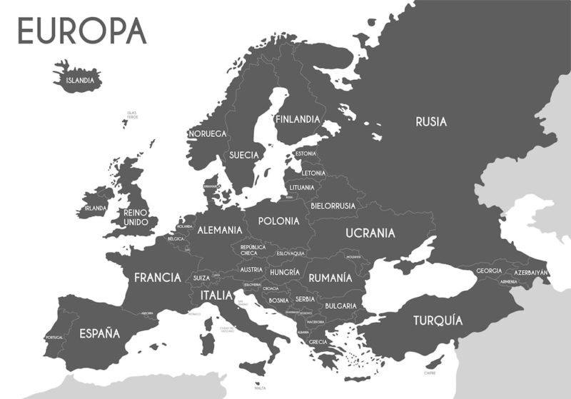

Te explicamos todo sobre Europa, sus características, límites y
qué países componen este continente.
Además, qué es la Unión Europea.
Europa es un continente del hemisferio norte, el segundo más pequeño del mundo y el tercero más poblado (luego de Asia y África).
Está conformado por las penínsulas de Eurasia (gran masa de tierra que comparte con el continente asiático) hacia el oeste, abarcando parte del continente y parte de las islas cercanas como Gran Bretaña e Islandia. La isla de Groenlandia, a pesar de estar físicamente más cerca de América, desde la división política forma parte de un país europeo (Dinamarca).
El continente europeo abarca casi el 7 % del área terrestre del mundo. El país de mayor tamaño es Rusia y la nación independiente de Ciudad del Vaticano es la más pequeña. Tiene una población estimada de 747 millones de habitantes y se hablan más de 50 idiomas, entre los principales, ruso, inglés, español, portugués, alemán y francés.